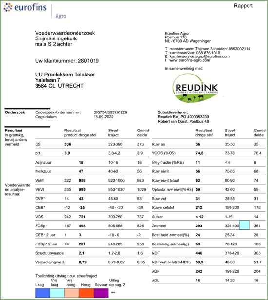
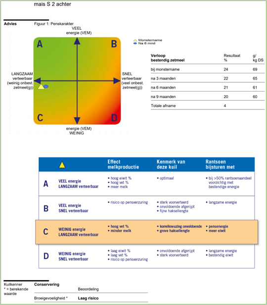
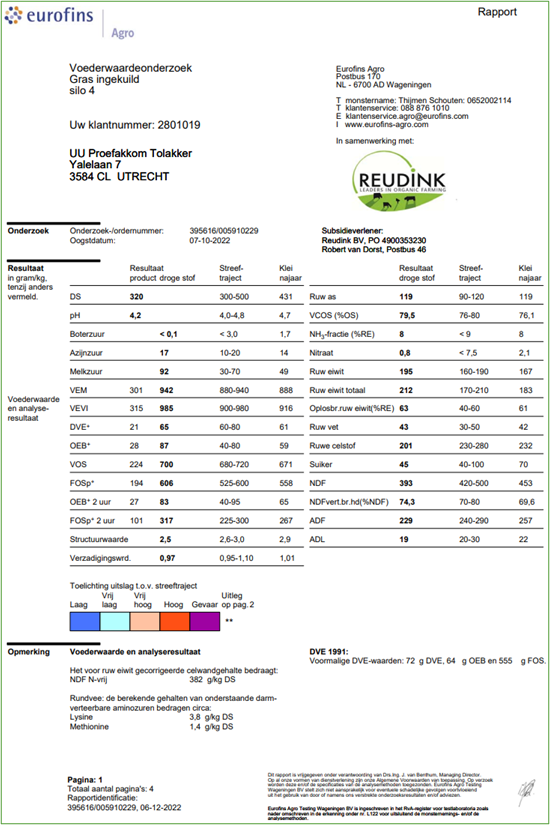
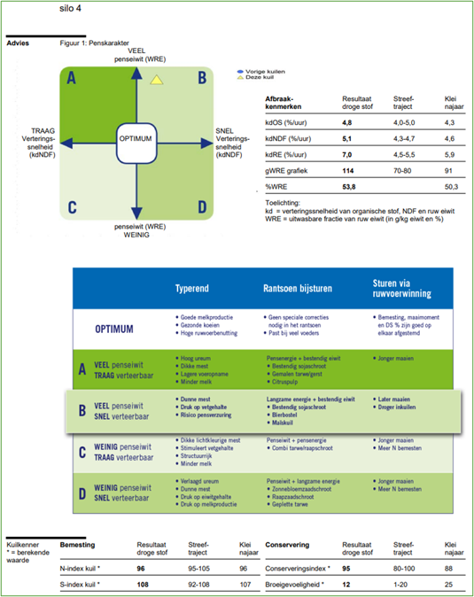
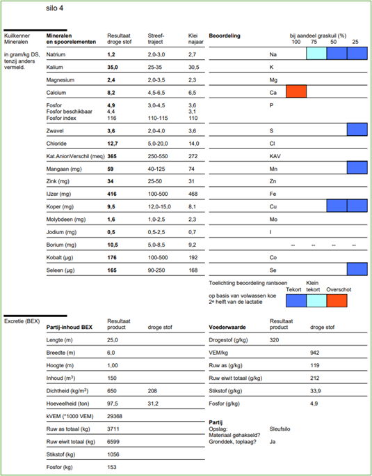
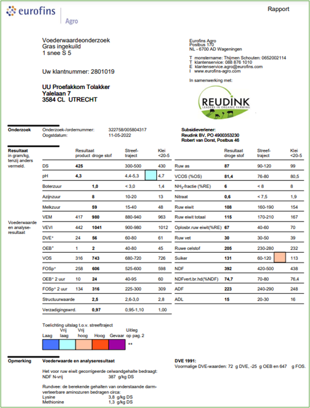
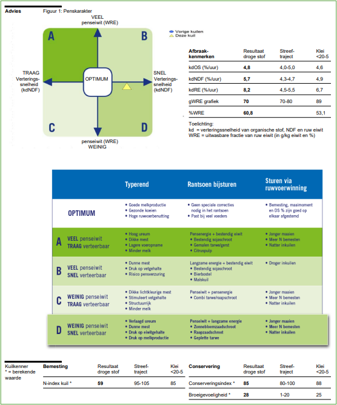
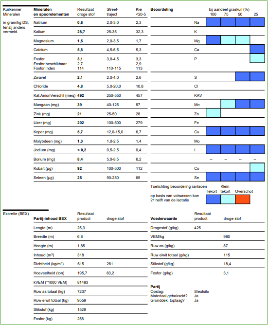

Lab 2 - Feed’n practice for transition management
Introduction
This lab will go through many different approaches to nutritional transition cow management as an addition to principles explained by the experts. The main goal is to reinforce our understanding of dry and fresh cow nutrition. Particular focus will be on energy, protein and mineral requirements.
Learning goals
By the end of the lab, you will…
- Be familiar energy, protein and mineral requirements for dry cows
- Understand different approaches to dry cow requirements
- Balance a dry and fresh cow diet using different forages
- …
Getting started
The lab will use an online feed balancing software. If you are not familiar with the software, make sure to read the Getting Started section.
Available silages
Below is an overview of different silages available on a farm you consult with.
Corn silage


Grass silage 1



Grass silage 2



Exercises
Add each of the aforementioned forages to your feed library.
Depending on the geo-spatial area where the dairy farm is situated, typical dry cow diets might differ. The farm manager and the nutritionist ask for your advice formulating different pre-fresh diets. You can add other forages/products (which he eventually has to buy).
Summarize each of the diets according to their energy, protein and mineral content. You can use (but not limited, this example)
| Nutrient | Diet exercize 1 | Diet exercize 2 | Diet exercize 3 |
|---|---|---|---|
| Energy | |||
| Protein component 1 | |||
| Protein component 1 | |||
| Calcium (g/kg DM) | |||
| P (g/kg DM) | |||
| … |
Exercise 1 -> Grass silage based
Formulate a pre-fresh diet in the case the dairy farmer asks you to use as much grass silage as possible as he wants to keep all corn silage for the lactating dairy cows.
The diet should be formulated to meet the requirements for energy, protein and minerals.
This diet might be typcial for grazing systems such as the North of the Netherlands, Ireland and New Zealand. When formulating such diets, scientific literature from these regions will be more suitable.
Exercise 2 -> Corn silage based
Formulate a pre-fresh diet in the case the dairy farmer asks you to use as little grass silage as possible as he wants to keep all grass silage for the lactating dairy cows. You can add other forages/products (which he eventually has to buy).
The diet should be formulated to meet the requirements for energy, protein and minerals.
This diet is more typcial for non-grazing systems such as France, North America. When formulating such diets, scientific literature from these regions will be more suitable.
Exercise 3 -> Strategy cost evaluation
Calculate the total cost per cow day (€/cow/day or $/cow/day) for the diets from exercise 1 and 2. Provide an overview of the relative contribution of each component in the ration.
The relative contribution of each component will help to evaluate the cost of each nutritional strategy, with a special focus on prevention of hypocalcaemia.
Resources for additional information
- Nutrient requirements of dairy cattle, 8th edition from The National Academics of Sciense,Engineering & Medicine
- Nutrient requirements of dairy cows from The Merck Veterinary Manual
- Chapter 6: Dairy cow nutrition from Handboek Melkveehouderij by Wageningen University & Research
- Transition Cow Nutrition and Feeding Management for Disease Prevention in Veterinary Clinics of North America: Food Animal Practice by Van Saun and Sniffen
- Energy and Protein Nutrition Management of Transition Dairy Cows in Veterinary Clinics of North America: Food Animal Practice by Lean et al.
- Symposium review: Transition cow calcium homeostasis—Health effects of hypocalcemia and strategies for prevention in Journal of Dairy Science by Wilkens et al.